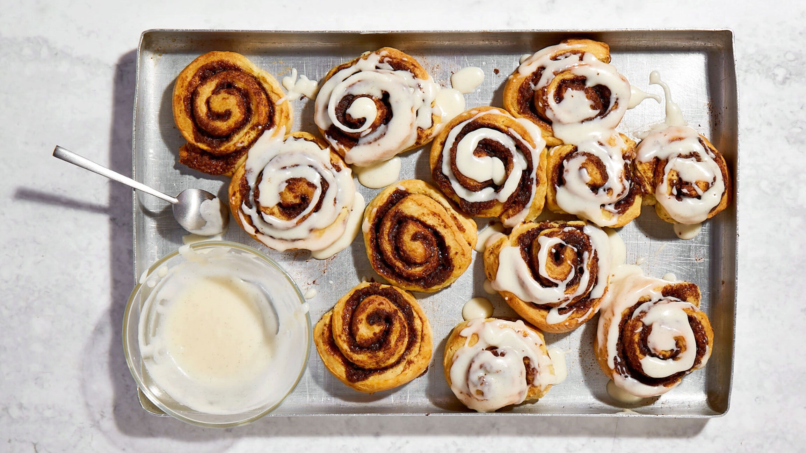

Gluten-Free Cinnamon Rolls

Description
Cinnamon rolls are always a family favorite! Rich in cinnamon and covered
in a cream cheese frosting, no one will be able to tell these are gluten-free.
- Prep: 25 mins
- Cook: 25 mins
- Servings: 10
Ingredients
Dough
- 1/4 cup white sugar
- 2 1/4 teaspoons quick-rise yeast
li>
- 1 3/4 cups gluten-free all-purpose flour
- 2 1/2 teaspoons baking powder
- 1 1/2 teaspoons xanthan gum
- 1/2 teaspoon baking soda
- 1/2 teaspoon salt
- 1 tablespoon unsalted butter
- 1/4 cup olive oil
- 1 large egg
- 1/2 teaspoon vanilla extract
- 2 tablespoons glute-free all-purpose flour, or as needed
Filling
- 1/2 cup brown sugar
- 1 tablespoon ground cinnamon
- 1/3 cup unsalted butter, melted
Frosting
- 2 tablespoons unsalted butter, softened
- 2 tablespoons cream cheese, softened
- 3/4 cup posdered sugar
- 1/2 tablespoon lemon juice
- 1/2 teaspoon vanilla extract
- 1 dash salt
Steps
- Combine sugar and yeast for dough in a small bowl. Mix flour,
basking powder, xanthan gum, baking soda and salt together in a second bowl.
- Place milk and butter in microwave-safe bowl and microwave on high, stirring
evey 15 seconds until melted, about 45 seconds. Whisk into the yeast mixture
and set aside to proof for 5 minutes.
- Combine proofed yeast wiht olive oil, egg and vanilla extract in a large bowl
for a stand mixer. Mix for a moment and then slowly add the flour mixture until
combined. Mix on medium-high until dough thickens and loses some of its stickiness.
About 1 to 2 minutes.
- Cover work surface with a sheet of plastic wrap and a light layer of flour.
Place dough in the center and cover with more flour and another sheet of plastic
wrap. Roll out to a 10x13-inch rectangle and then remove the top layer of plastic wrap.
- For the filling, combine brown sugar and cinnmon in a small bowl. Spread melted butter
over the surface of the dough and sprinkle brown
- Start a long edge of the dough and start rolling it up using the plastic wrap to help and
roll as you go. Lightly sprinkle dough with more flour and cut into 10 pieces with a sharp
kife. Place rolls in a greased baking pan, cover with plastic wrap and leave in a warm place
for 15 mins
- Preheat over to 350 degrees F (175 degrees C)
- Bake rolls in the preheated over until top are golden brows, 22-27 minutes.
- Whilte rolls are baking, beat butter and cream cheese for frosting in a stand mixer bowl
until smooth. Add powdered suger and mix until smooth. Mix in lemon juice, vanilla extract
and salt.
- Remove cinnamon rolls from teh oven and immediately drizzle frosting over tops.
Cook's Note
If your gluten-free all=purpose flour already has xanthan gum in it, do not add extra to the dough.
Nutrition Facts
437 calories; protein 6.5g; carbohydrates 50.7g; fat 23.5g; cholesterol 92.8mg; sodium 535.4mg.